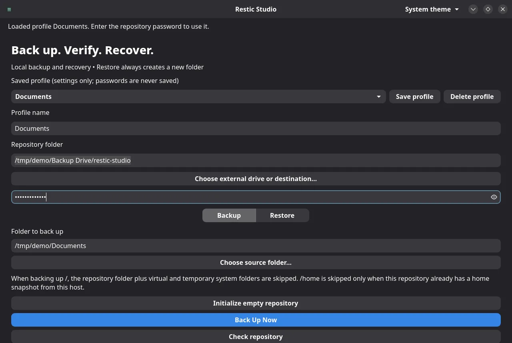
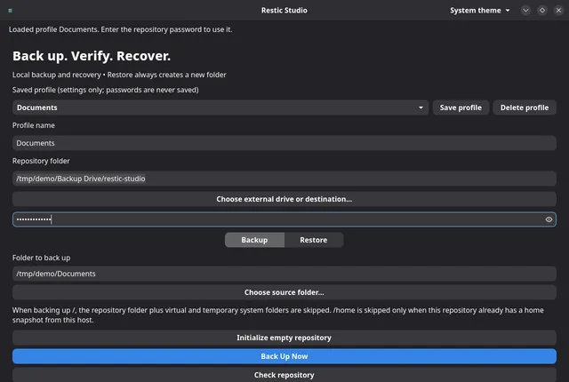
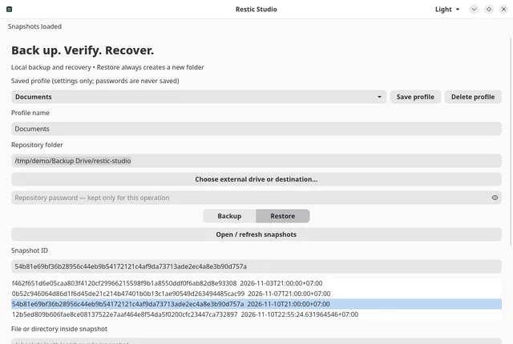

Back up in one click
Pick a folder and a repository, then choose Back Up Now. A progress window shows Restic's file and byte counts as it works.
Restic Studio is a native Linux app that backs up your folders to an encrypted Restic repository, including one on an external drive, then lets you browse every snapshot and restore what you need into a fresh folder.

Restic Studio wraps the Restic you already trust in a calm desktop app, and never takes a destructive step on your behalf.
Pick a folder and a repository, then choose Back Up Now. A progress window shows Restic's file and byte counts as it works.
A dry run shows what a backup would include without uploading anything or creating a snapshot.
restic backup --dry-runSave a repository, sources, exclusions and options under a name and load them in one click. Passwords are never saved.
Choose a folder on a mounted drive. Restic Studio refuses to write to the system disk when the drive is missing.
List every snapshot in a repository and walk its folders to find the file or directory you want back.
Restores are verified, staged privately and published into a new folder, so nothing you already have is overwritten.
Run Restic's structure check from the app, because a finished backup alone does not prove the repository is healthy.
The restic-studio command runs the same backups, checks and restores
from scripts, with the password on standard input.
Follow your system theme, or pick one from the header.


| Platform | Status |
|---|---|
| Debian sid (forky/sid), amd64 | Signed APT repository below. Needs Restic 0.19, GTK 4.24, libadwaita 1.10 and glibc 2.43 or newer. |
| Debian 13 and Ubuntu | Not yet. Their GTK, libadwaita and glibc versions are too old for this build. |
| Repositories | Local folders and mounted external drives. Cloud and network repositories such as S3 or SFTP are not supported yet. |
Add the signed repository once and APT keeps Restic Studio updated with your other packages. Verify the signing key before you trust it.
sudo apt update
sudo apt install ca-certificates curl gnupgThe fingerprint printed by gpg must be exactly this:
E4C2 92E5 08CB 8700 6F7C 904E 7F08 D91D 3A1D 8F76
curl -fsSLo /tmp/mikeholp87-apt.asc https://mikeholp87.github.io/apt/apt.asc
gpg --show-keys --with-fingerprint /tmp/mikeholp87-apt.ascsudo install -D -m 0644 /tmp/mikeholp87-apt.asc /etc/apt/keyrings/mikeholp87-apt.asc
echo "deb [signed-by=/etc/apt/keyrings/mikeholp87-apt.asc] https://mikeholp87.github.io/apt/ ./" \
| sudo tee /etc/apt/sources.list.d/mikeholp87-apt.list >/dev/nullsudo apt update
sudo apt install restic-studio
Launch it from the application menu or run restic-studio-gui. Update
later with sudo apt update && sudo apt upgrade. Remove with
sudo apt remove restic-studio; your repositories and snapshots are left
untouched. Prefer a single file? Download the .deb and its SHA-256
checksums from
GitHub Releases.
Restores always create a new folder. Restoring into /,
/etc, /usr or /boot is blocked.
Backups, restores and checks remember the repository and drive identity, and stop if a different one appears at the same place.
You enter the repository password for each operation. It is never written to disk, and nothing leaves your machine.
Not yet. It is a development preview. Restic does the backing up, but the app has not finished its recovery acceptance testing. Keep another backup, and practice restoring a file to a new folder before you rely on it.
Nowhere. The app asks for it for each operation and passes it to Restic through a private pipe. Saved profiles hold settings only. If you lose the password, Restic cannot decrypt the repository, so keep it somewhere safe.
Restic Studio remembers each repository's ID and, when the system reports one, the drive's hardware identifier. If they change, it stops instead of backing up to the wrong place or creating a new repository on your system disk.
You can choose / as the source. The repository and virtual or temporary
folders such as /proc, /tmp and /media are
skipped automatically. The app runs as your user, so files you cannot read are
reported as a partial backup rather than hidden.
Open an issue on GitHub.